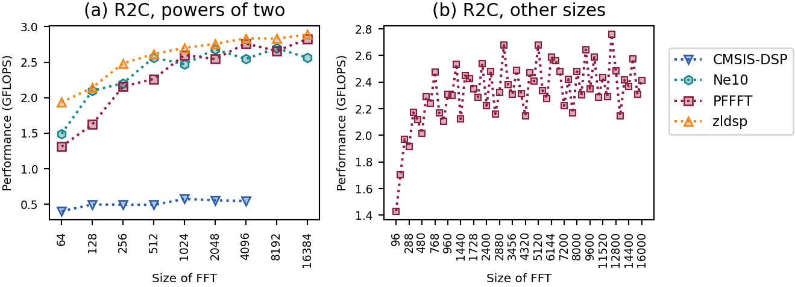
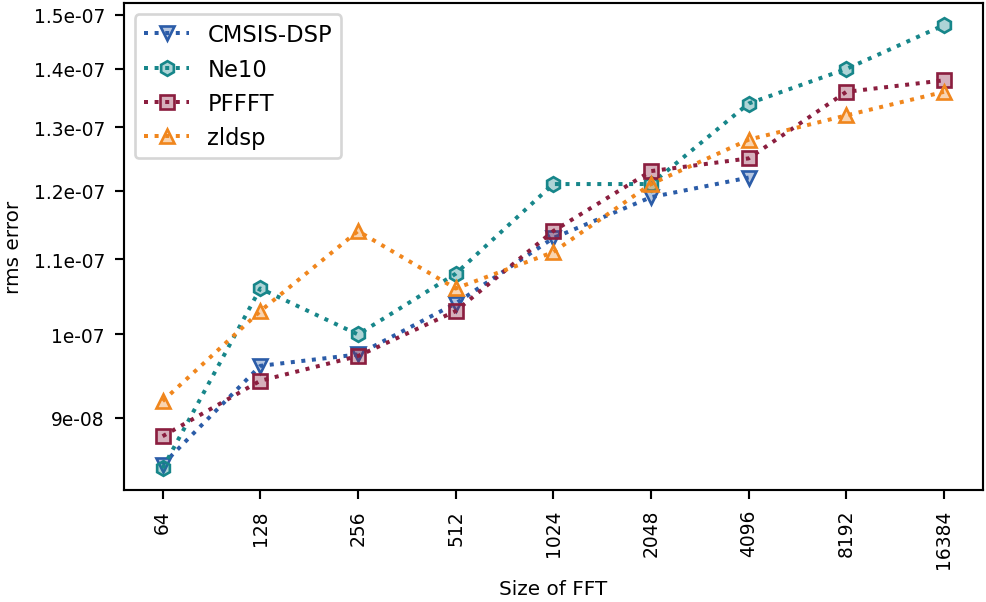

QEMU cortex-a72
, L1d cache 64 KiB (2 instances), L2 cache 2 MiB (2 instances), L3 cache 32 MiB (1 instance), 4 CPUs
, a VM on Microsoft
.
Linux runnervm7aw5e 7.0.0-1017-azure #17~24.04.1-Ubuntu SMP PREEMPT Thu Sep 24 18:46:57 UTC 2026 x86_64 x86_64 x86_64 GNU/Linux
Runner image: ubuntu24 20261101.360.1
Emulated: qemu-aarch64 -L /usr/aarch64-linux-gnu -cpu cortex-a72
Rounds: 5.
Compilers and flags (unless overridden): C GNU 13.3.0 ;
C++ GNU 13.3.0 .
Libraries: CMSISDSP 1.18.0, CMSISCORE 6.4.0, FFTW 3.3.10, IPP 2026.1.0, KFR 7.2.0, NE10 1f059a764d0e, K2FFT commit 5998ca16072a.
Raw data files: linux-arm64-qemu_cortex-a72.counts.speed linux-arm64-qemu_cortex-a72.accuracy linux-arm64-qemu_cortex-a72.counts.tbl linux-arm64-qemu_cortex-a72.info linux-arm64-qemu_cortex-a72.sysinfo linux-arm64-qemu_cortex-a72.ctest linux-arm64-qemu_cortex-a72.verdicts linux-arm64-qemu_cortex-a72.fastest
Checks: passed. K2FFT: beaten at 1 of 67, by zldsp 1.
new: linux-arm64-qemu_cortex-a72 has no baseline
QEMU instruction counts, one round: codes no rival beat by more than 15%:
| n | unbeaten, fastest first | K2FFT beaten by |
|---|---|---|
| 64 | zldsp | zldsp |
| 96 | pffft | |
| 128 | zldsp ne10 | |
| 160 | pffft | |
| 192 | pffft | |
| 256 | zldsp ne10 | |
| 288 | pffft | |
| 320 | pffft | |
| 384 | pffft | |
| 480 | pffft | |
| 512 | zldsp ne10 | |
| 576 | pffft | |
| 640 | pffft | |
| 768 | pffft | |
| 800 | pffft | |
| 864 | pffft | |
| 960 | pffft |
| n | unbeaten, fastest first | K2FFT beaten by |
|---|---|---|
| 1024 | zldsp pffft ne10 | |
| 1152 | pffft | |
| 1280 | pffft | |
| 1440 | pffft | |
| 1536 | pffft | |
| 1600 | pffft | |
| 1728 | pffft | |
| 1920 | pffft | |
| 2048 | zldsp ne10 pffft | |
| 2304 | pffft | |
| 2400 | pffft | |
| 2560 | pffft | |
| 2592 | pffft | |
| 2880 | pffft | |
| 3072 | pffft | |
| 3200 | pffft | |
| 3456 | pffft |
| n | unbeaten, fastest first | K2FFT beaten by |
|---|---|---|
| 3840 | pffft | |
| 4000 | pffft | |
| 4096 | zldsp pffft ne10 | |
| 4320 | pffft | |
| 4608 | pffft | |
| 4800 | pffft | |
| 5120 | pffft | |
| 5184 | pffft | |
| 5760 | pffft | |
| 6144 | pffft | |
| 6400 | pffft | |
| 6912 | pffft | |
| 7200 | pffft | |
| 7680 | pffft | |
| 7776 | pffft | |
| 8000 | pffft | |
| 8192 | zldsp ne10 pffft |
| n | unbeaten, fastest first | K2FFT beaten by |
|---|---|---|
| 8640 | pffft | |
| 9216 | pffft | |
| 9600 | pffft | |
| 10240 | pffft | |
| 10368 | pffft | |
| 11520 | pffft | |
| 12000 | pffft | |
| 12288 | pffft | |
| 12800 | pffft | |
| 12960 | pffft | |
| 13824 | pffft | |
| 14400 | pffft | |
| 15360 | pffft | |
| 15552 | pffft | |
| 16000 | pffft | |
| 16384 | zldsp pffft ne10 |